You should already have a Quarto website (or at least the bones of one) that:
is deployed using GitHub Pages and
contains some content (e.g. text, headings, etc.) for us to customize
Quarto Website Default Design
When we render a new Quarto site, it converts all of our markdown into HTML and applies a pre-built CSS stylesheet (the Bootswatch Cosmo theme).
We can modify the appearance of our website in a number of ways:
Editing the index.qmd YAML – you can apply a pre-built template to give your landing page a sleek and professional appearance (we can further modify this later with some CSS).
Editing the _quarto.yml file – this is our website configuration file, where we can easily update our website’s navigation (e.g. add new pages), add a page footer, a favicon, and much more. We can also switch the default theme to a different pre-built Bootswatch theme (by replacing cosmo with an alternative theme name).
Defining CSS rules in the styles.css file that comes with every new Quarto site. This allows you to fine-tune the appearance of your site.
Creating a .scss file(s) that contains Sass variables to quickly customize your website’s theme – these take the form of $var-name: value; and you can find a list of them in the Quarto documentation.
Or…
Quarto Website Default Design
Combine all of the above!
Approaching this in the following order worked best for me:
First, add a pre-built template to index.qmd and adjust website configurations by editing _quarto.yml – this is the easiest way to add some really cool features with minimal effort.
Next, create a styles.scss file, link to it in _quarto.yml (this applies your styles to your Quarto site), and define your Sass variables.
Finally, make fine-tuned adjustments by defining CSS rules directly in your styles.scss file (you can write CSS in .scss files, but not Sass in .css files).
Quarto Website Default Design
Working on branches is recommended!
I almost always work on a branch when making changes to my website – this way I can safely test changes before deploying them to my live site.
To create a branch, first ensure that you’re on main by typing either git branch or git status into the RStudio Terminal (either will tell you which branch you’re currently on). If you’re not on main, you can switch by running git checkout main.
Quarto Website Default Design
Create a local git branch from main by running the following in your Terminal:
Terminal
git checkout -b my-new-branch
Push your new local branch to GitHub by running the following in your Terminal:
Terminal
git push -u origin my-new-branch
You’re now ready to work as normal! Once satisfied with your changes, you can git add, git commit -m "my commit message", and git push (or use the RStudio GUI buttons in the Git tab) your files. Open a pull request from GitHub and merge into main to integrate your changes.
Preview your site for fast iteration
Run quarto preview in the RStudio Terminal to view changes in near real time – each time you edit and save your work, the preview will update in your browser.
Let’s start styling
So you’ve created a Quarto website…
Quarto gives us an easy-to-use web publishing format to create our personal websites – we can develop in a space that is comfortable (for me, that’s RStudio) and write mostly Markdown syntax (which is rendered as HTML when we build our website). A massive benefit is that these websites already look pretty slick right out of the box.
But some additional modifications can make your website stand out from the rest
Edit YAML
First, add a pre-built template to index.qmd and adjust website configurations by editing _quarto.yml – this is the easiest way to add some really cool features with minimal effort.
You can apply a template to any of your website’s pages, though they are particularly awesome for creating a clean, professional-looking landing page.
Add a landing page template (rendered)
Quarto has 5 pre-built template “about pages”, which can be used to nicely arrange content about a person or organization. These work especially well for personal websites! For example:
Without an About Page template
jolla About Page template
Add a landing page template (code)
Use the about option to apply a template to your landing page:
index.qmd
---# title: "Samantha Csik" # optional (omitted in example screenshots)image: file/path/to/headshot.jpeg # a great spot for your professional headshot :) toc:false # disable table of contents for this page (if applicable)about:template: jolla image-shape: roundimage-width: 17emlinks: # create buttons-text: LinkedInhref: https://www.linkedin.com/in/samanthacsik/target: _blank # opens link in a new browser tab-text: GitHubhref: https://github.com/samanthacsiktarget: _blank -text: Emailhref: mailto:scsik@ucsb.edu---# ~ landing page content / text omitted for brevity ~
Be sure to spell the icon name exactly as it appears on FontAwesome’s website (e.g. the LinkedIn icon, , is all lowercase and spelled, linkedin).
Add / arrange pages
We configure website navigation in _quarto.yml, including the type of navigation menu (navbar, sidebar), how pages are ordered, etc.
Here, we moved our navbar items to the right side, link to a curriculum vitae (pdf), and also add a GitHub icon which links to a GitHub profile.
Add / arrange pages
Make edits to a website’s navigation bar under the website > navbar option:
_quarto.yml
project:type: websiteoutput-dir: docswebsite:title:"Sam Csik"navbar:right: # accepts right/left/center; you can also place items individually on the left, right, and center-href: index.qmdtext: Home- about.qmd-href: resources.qmdtext: Resources-href: file/path/to/myCV.pdf # provide a relative file path to a pdf will open up a browser-based pdf viewer when clickedtext: CVtarget: _blank # opens link (or page) in a new browser tab-icon: github # add icons as navbar buttonshref: https://github.com/samanthacsiktarget: _blankformat:html:theme: cosmocss: styles.csstoc:truepage-layout: full
Add page footer
Footers appear on each page (you may have to scroll to the bottom to see it appear). You can include a mix of text, icons, logos, hyperlinks, etc.
Add page footer
Make edits to a website’s footer under the website > page-footer option:
_quarto.yml
project:type: websiteoutput-dir: docswebsite:title:"Sam Csik"navbar:right:-href: index.qmdtext: Home- about.qmd-href: resources.qmdtext: Resources-href: cv/myCV.pdftext: CVtarget: _blank -icon: github href: https://github.com/yourUserNametarget: _blankpage-footer:background: light #or darkleft: Copyright 2021, Samantha Csikright: This website is built with , [](https://github.com/samanthacsik/samanthacsik.github.io){target=_blank}, [](https://www.r-project.org/about.html){target=_blank} and [Quarto](https://quarto.org/){target=_blank}format:html:theme: cosmocss: styles.csstoc:truepage-layout: full
fontawesome Extension
If you want to use FontAwesome icons anywhere else on your website (i.e. outside of the icon YAML option), you’ll need to first install the Quarto fontawesome extension.
Running the following in your RStudio Terminal will download and save the extension to a folder named _extensions in your repo’s root directory (alternatively, you may do so from any command line interface, but make sure you’re in your project’s root directory). Be sure to push this new folder (and its contents) to GitHub:
Terminal
quarto add quarto-ext/fontawesome
Note: You’ll need to install this extension for each new project where you’d like to use icons (e.g. if you create a different website).
fontawesome shortcode
To embed an icon, look up the icon’s name on FontAwesome (be sure to only choose from the Free icons), then use the fontawesome shortcode:
{{< fa icon-name title="descriptive text for accessibility" >}}
For example, the following shortcodes…
{{< fa face-smile title="A smiling face" >}}{{< fa laptop title="An open laptop" >}}{{< fa file-code title="A code file" >}}
…will render as , ,
fontawesome brands
Some icons fall within the brands collection and must be prefixed with brands inside the shortcode. For example, the GitHub icon :
{{< fa brands github title="The GitHub octocat logo" >}}
You can identify if an icon falls within the brands collection by clicking on its preview (e.g. the github icon) and checking to see if the HTML class is fa-brands:
Favicons & logos
You can add a personal logo in the top left corner of your navbar in place of your title. The free Adobe Express Logo Maker is a great tool for creating your own logo!
A favicon is a small icon used on web browsers to represent a website or a web page. Get creative and use a custom favicon that complements your personal logo.
Favicons & logos
Tip: Download your logo with a transparent background so that it can be placed anywhere on your site without having to deal with mismatched background colors. I also recommend making them as large as possible before downloading – doing so can help mitigate the need for drastic resizing using CSS.
Favicons & logos
_quarto.yml
project:type: websiteoutput-dir: docswebsite:title:"Sam Csik"favicon: file/path/to/image.png # NOTE: that the `favicon` is a `website` level option (not under `navbar`)navbar:title:false # override printing your website `title` (e.g. "Sam Csik" on line 6) in the top left corner of your navbarlogo: file/path/to/logo.pngright:-href: index.qmdtext: Home- about.qmd-href: resources.qmdtext: Resources-href: file/path/to/myCV.pdftext: CVtarget: _blank-icon: githubhref: https://github.com/samanthacsiktarget: _blankpage-footer:background: lightleft: Copyright 2021, Samantha Csikright: This website is built with , [](https://github.com/samanthacsik/samanthacsik.github.io){target=_blank}, [](https://www.r-project.org/about.html){target=_blank} and [Quarto](https://quarto.org/){target=_blank}format:html:theme: cosmocss: styles.csstoc:truepage-layout: full
Sass is a CSS extension (provides additional features, like variables)
Sass is a CSS preprocesser (converts Sass code into standard CSS, which is a critical step because browsers can’t interpret Sass but can interpret CSS)
I know it might feel like we’re getting ahead of ourselves a bit here by talking about Sass before CSS, but bear with me!
Sass reduces repetition
Sass extends existing CSS features in a number of exciting ways, but importantly reduces repetition. For example, let’s say you’re building a website / web page that uses three colors:
You might imagine how often you’ll need to type those HEX codes out as you developing your stylesheet…it can get annoying rather quickly.
Define Sass variables
Sass allows us to define variables (in the form $var-name: value;) for our colors, which we can reference instead of writing out their HEX codes each time. This makes your stylesheet more readable and easier to update (e.g. only need to update HEX codes in one spot, not multiple!).
Example stylesheet (.scss)
// define Sass vars $darkblue: #053660;$teal: #147C91;$darkgray: #333333;// use vars in CSS rules (we'll learn more about how to write CSS soon!) h1 { font-color: $darkblue;}.button-styling {background: $teal;color: $darkblue; border-color: $darkgray;}
Note: Sass has two syntaxes – SCSS syntax (.scss), shown above, is the most common. It stands for Sassy Cascading Stylesheets and also the SASS syntax (.sass)
Quarto compiles Sass automatically
Web browsers can interpret CSS (.css) but not Sass (.scss or .sass).
Typically, you’d need to compile (i.e. convert) Sass to CSS, then link the resulting .css file in your HTML.
Lucky for us, Quarto compiles the contents of a .scss file into CSS without any extra steps – all we need to do is link to a .scss file directly in our website’s _quarto.yml.
Let’s create our website’s .scss stylesheet.
(The following slides break this down into ~7 steps)
Create .scss file
Create a .scss file in your repo’s root directory using the touch command in the RStudio Terminal (alternatively, use New Blank File > Text File in the Files pane):
Terminal
touch styles.scss # name it whatever you want
Add the /*-- scss:defaults --*/ region decorator to the top of styles.scss (required by Quarto) – you’ll write all your Sass variables underneath this.
styles.scss
/*-- scss:defaults --*/
Adding the region decorator as written above is critical! Quarto won’t recognize your .scss file without it.
Create .scss file
Apply your styles.scss file to your website using the theme option:
_quarto.yml
format:html:theme: styles.scsstoc:truepage-layout: full
Note: I’ve also removed the css: styles.css option that was included by default, since I’ll be writing all my sass and css in this single styles.scss file
Define colors variables
I like to start by defining the colors I want to use throughout my site. For example:
You can also define values with units, e.g. $my-font-size: 25px;.
Note: In .scss files, // denote single line comments. Multi-line comments start with /* and end at the next */.
Define Quarto Sass variables
Quarto provides a list of pre-defined Sass Variables, which control the appearance of various website elements and that can be specified within .scss files. We can assign our newly-minted color variables as values to Quarto Sass variables to easily update things like the background color, navbar & footer colors, hyperlink color, and more.
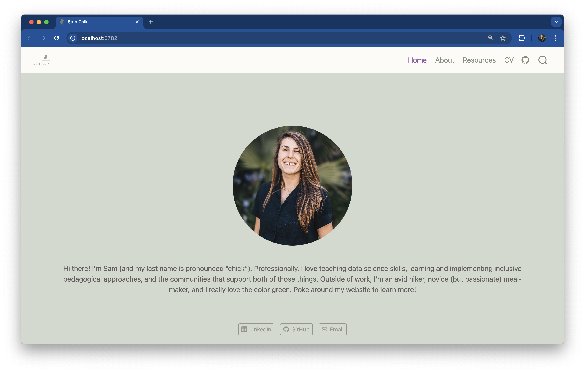
Define Quarto Sass variable
Use the syntax $quarto-var: $your-color-var;.
styles.scss
/*-- scss:defaults --*/// Colors$dark-green: #858E79;$light-green: #D1D9CE;$cream: #FDFBF7;$gray: #64605f;$purple: #9158A2;$orange: #ad7237;// Base document colors$navbar-bg: $cream; // navbar$navbar-fg: $dark-green; // navbar foreground elements$navbar-hl: $purple; // highlight color when hovering over navbar links$body-bg: $light-green; // page background $body-color: $gray; // page text $footer-bg: $cream; // footer $link-color: $purple; // hyperlinks // Inline code$code-bg: $cream; // inline code background color$code-color: $purple; // inline code text color
Combining themes
You also do not need to create a theme entirely from scratch! If you like parts of a pre-built Bootswatch theme, you can modify it by layering on your desired updates using your own custom styles.scss file.
For example, let’s say I love everything about the pre-built cosmo theme, and only want to update the navbar background color to orange. My files might look something like this:
_quarto.yml
format: html: theme:- cosmo- styles.scss toc: false page-layout: full
Our resulting website, which is primarily themed using cosmo, but with a custom orange navbar.
Explore Google fonts
Fonts are just as important as color in expressing yourself and your brand – you should absolutely be importing and using a different (more exciting) font family(ies) than the default.
6a. Browse the many available Google fonts at https://fonts.google.com/ and choose 1-3 fonts (two is, in my option, the sweet spot). Click on the Filters button in the top left corner of the page to help narrow your choices.
Select Fonts 1
6b. Select a Google font family by clicking the blue Get Font button in the top right corner of the page, which adds your font family to your “bag.” You can add as many font families to your bag as you’d like to import – here, we select both Nunito and Sen.
Explore the Nunito font family, which is available in a number of styles (i.e. different weights and italic):
View all of your selected font families and get your embed code from your shopping bag:
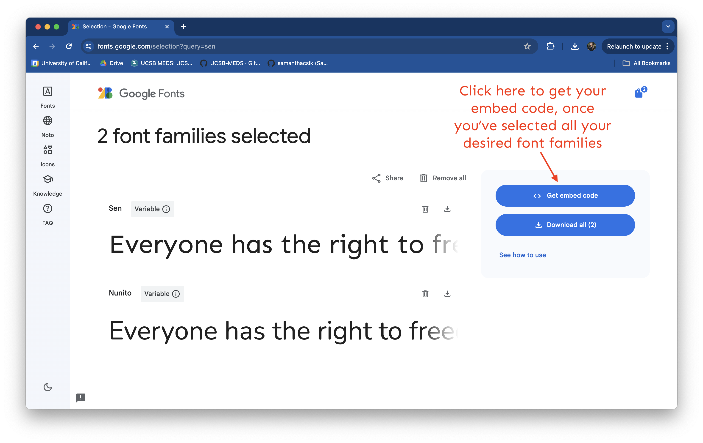
IMPORTANT: If you want to bold or italicize text, you need to select a font family that has those styles (not all font families come in every style e.g. Sen does not come in italic).
Select Fonts 2
6c. Click Get embed code, then choose the @import radio button (beneath the Web menu option), which will provide your import code chunk. Copy everything between the <style> </style> tags (starting with @import and ending with ;) to your clipboard.
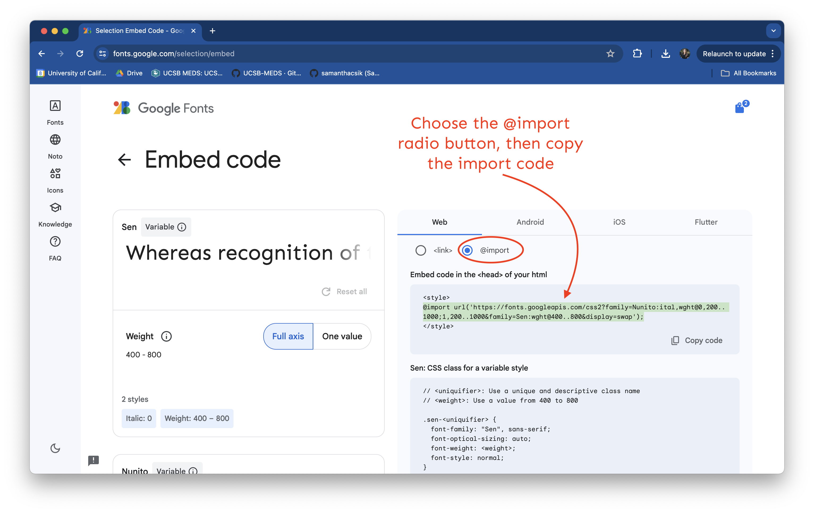
Select Fonts 3
6d. Paste the import code into styles.scss (I always place this at the top of my stylesheet, beneath /*-- scss:defaults --*/).
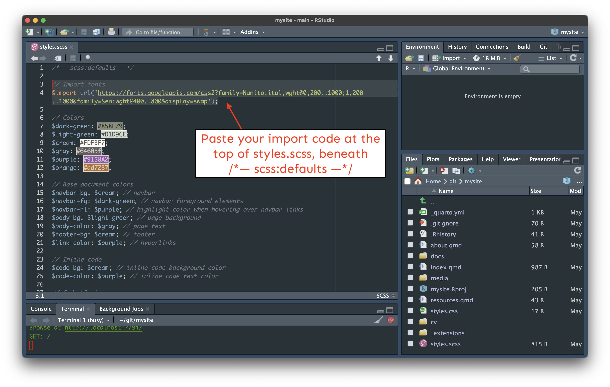
Select Fonts (gif)
If you’re like me, you might find a gif of the whole process helpful:
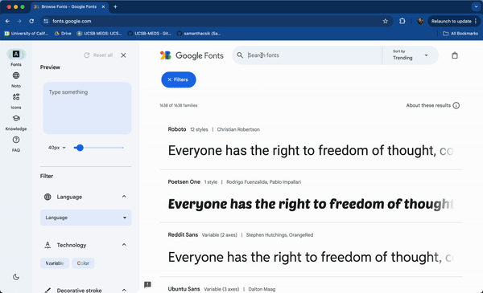
Import fonts
Your styles.scss should now similar to this:
styles.scss
/*-- scss:defaults --*/// Import Google fonts@importurl('https://fonts.googleapis.com/css2?family=Nunito:ital,wght@0,200..1000;1,200..1000&family=Sen:wght@400..800&display=swap');// Colors$dark-green: #858E79;$light-green: #D1D9CE;$cream: #FDFBF7;$gray: #64605f;$purple: #9158A2;$orange: #ad7237;// Base document colors$navbar-bg: $cream; // navbar$navbar-fg: $dark-green; // navbar foreground elements$navbar-hl: $purple; // highlight color when hovering over navbar links$body-bg: $light-green; // page background $body-color: $gray; // page text $footer-bg: $cream; // footer $link-color: $purple; // hyperlinks // Inline code$code-bg: $cream; // inline code background color$code-color: $purple; // inline code text color// Code blocks$code-block-bg: $cream; // code block background color
Set mainfont
The easiest way to apply a main (i.e. default) font for all text elements on your website is in _quarto.yml using the mainfont option:
_quarto.yml
format:html:theme: styles.scssmainfont: Nunitotoc:truepage-layout: full
All text elements on our website are now Nunito
Apply other fonts?
Cool, but what about applying our second font, Sen?
Great question, and hang tight! This requires some CSS, which is the perfect segue into our next section.
Apply other fonts?
If you plan to use multiple fonts, you can create Sass variables for each font type, then use those variables as you construct your CSS rules. For example, this slide deck uses three fonts (Sanchez, Montserrat, and Roboto Mono):
You must import a higher font weight (e.g. 800), in addition to your standard “regular” weight, if you wish to bold text – even bolding text using markdown syntax (e.g. **this text is bold**) will not work unless a higher font weight style is imported).
CSS + Quarto
Quarto comes with styles.css
A styles.css file is automatically generated when you create a new Quarto site
We can write our CSS rules in styles.css, but alternatively, we can write them directly in our styles.scss file(remember, you can write CSS in a .scss file but you can’t write Sass in a .css file).
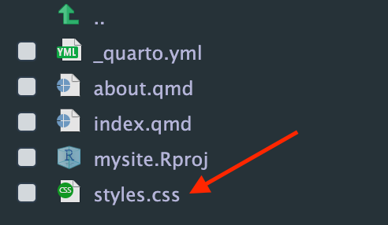
You can delete styles.css if you don’t plan to use it, or leave it be (it won’t impact your Quarto site since it’s not linked as our stylesheet in _quarto.yml).
SCSS rules divider
To start defining CSS rules in styles.scss you first need to add the /*-- scss:rules --*/ region decorator beneath your Sass variables section (this is important! your CSS won’t be recognized without this region decorator in place):
Next, we’ll walk through some examples of how to modify your site with your own CSS rules.
Determine element(s) to style
Note: I’ve added a bit more text to my page titled, “About,” for demonstration purposes.
Let’s say I want to similarly style (add a bit of spacing between each letter, increase font weight) the following text on my website:
On my About page, I want to style the page title, “About”, and each of the section headers
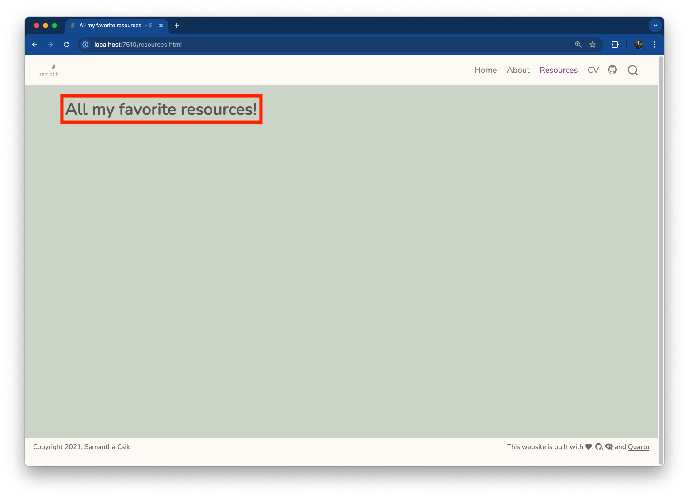
On my Resources page, I want to style the page title, “All of my favorite resources!”
Don’t know element?
But what if I don’t know what HTML element type this is? Inspect!
Using the Inspect tool is a great way to get a better sense of how CSS is used to modify particular HTML elements (this works with any web page, and also your locally hosted website preview).
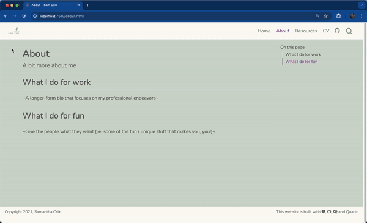
Don’t know element?
In your website preview, right click on an element of interest (in this case, let’s start with the page title, “About”) and choose Inspect to pull up the underlying HTML & CSS files. You can continue to right click / inspect additional elements (e.g. the section header, “What I do for work”).
Hovering your mouse over different lines of HTML highlights the corresponding element on your webpage.
Inspect About & Resources page titles
The words “About” and “All my favorite resources!” are <h1> elements
Only the screenshot for the “About” page shown here
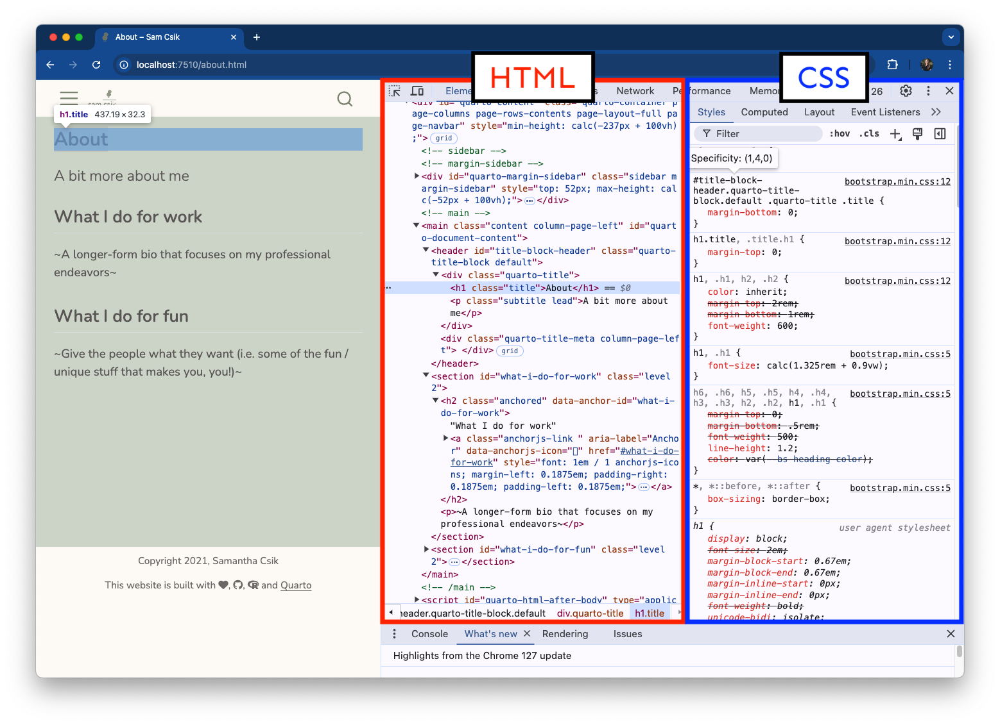
Note: These <h1> elements also have a class title
Inspect About page sections
Both section headers on the page titled, “About,” are <h2> elements
Only the screenshot for the section header that reads, “What I do for work,” shown here
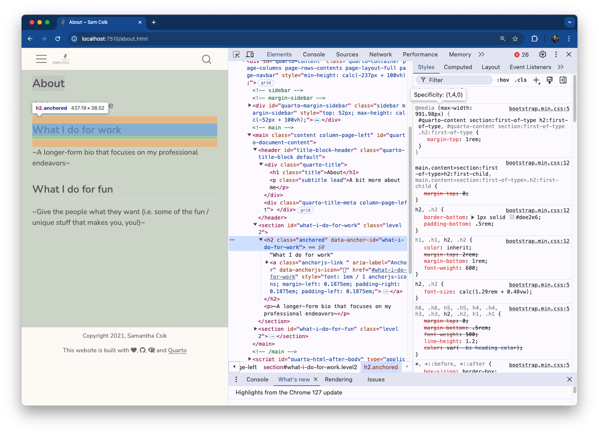
Note: These <h2> elements also have a class anchored. :::
Write a <h1> and <h2> grouping selector
styles.scss
/*-- scss:rules --*/h1, h2 {letter-spacing: 5px;font-weight: 800; // Google fonts tells you which weights your chosen font family allows for!}
Note: We don’t need to make any changes to the HTML (in about.qmd and resources.qmd) since this grouping selector targets all<h1> and <h2> elements across the site. If an element on any of the pages has either of those tags, it will get styled according to the declaration(s) included in our CSS rule.
Preview grouping selector
Our updated <h1> and <h2> elements should now look something like this:
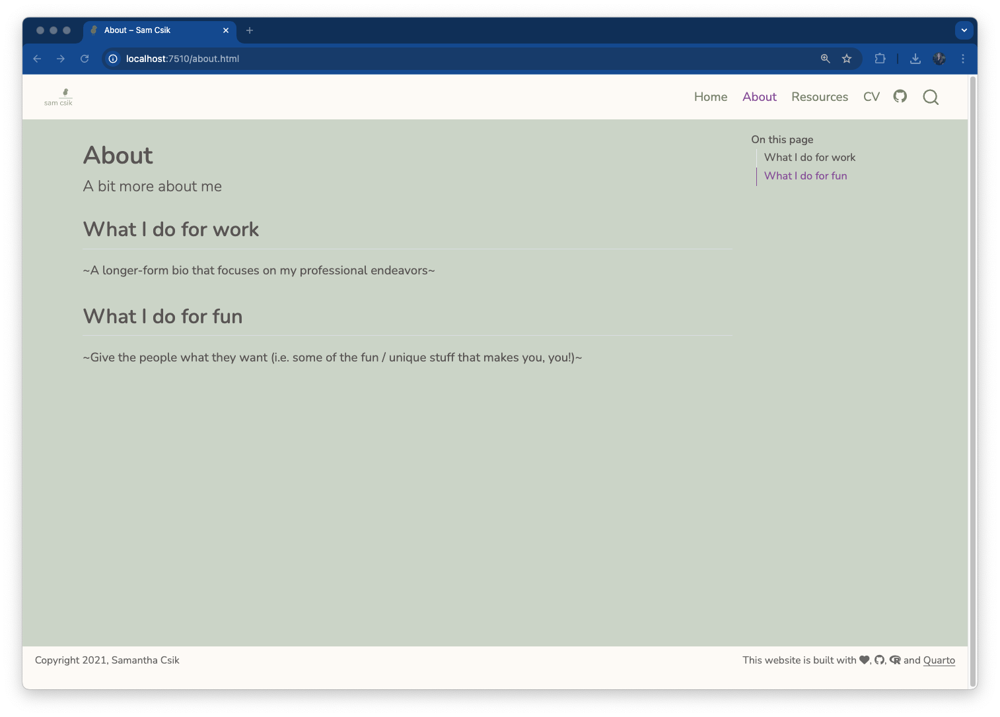
No CSS styling on h1 and h2 headers
With CSS styling on h1 and h2 headers
Check to see that our styles were also applied to our “Resources” page title.
Predefined ‘title’ class
Recall those .title class selectors we noted earlier?
We noted that the page titles (“About” on the About page and “All my favorite resources!” on the Resources page), are all <h1> elements and are also given the class, title (e.g. <h1> class="title">All of my favorite resources!</h1>). This means that the Quarto framework has already defined a class selector called .title and applied that class to the above elements.
Predefined ‘title’ class
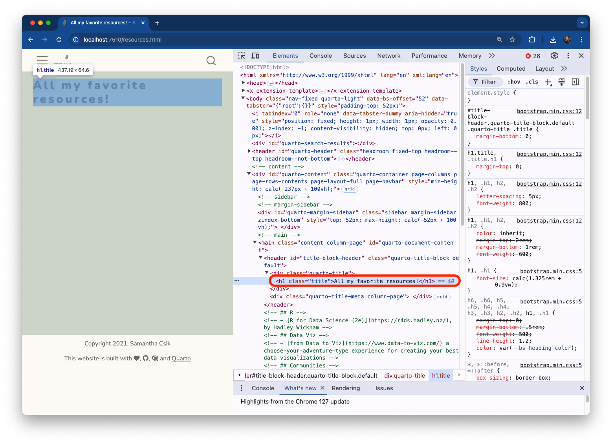
Modify ‘title’ class
We can modify existing class (or ID) selectors
For example, let’s make any text elements that are assigned the class, .title, the color maroon:
It’s important to note that we didn’t need to make any changes to the HTML (in about.qmd, and resources.qmd) since those <h1> elements are already assigned the class, title. Updates are automatically applied to any elements that the Quarto framework has already assigned as that class.
Similarly, you can modify the .anchored class that we saw was, by default, applied to our <h2> elements.
Elements w/o title class
Can we apply the title class to other elements?
Yes! To demonstrate, let’s write a couple of HTML elements that are not by default assigned the title class to see what happens – in other words, let’s apply the title class to some elements beyond just our website’s landing page name and page titles. I’ll do this on my Resources page (resources.qmd):
Elements w/o title class
resources.qmd
---title: "All my favorite resources!"---<h1>this is an `<h1>` element</h1> # alternatively, you can write <h1> elements using markdown (`# this is an `<h1>` element`)<h1 class="title">this is an `<h1>` element of class `title`</h1><p>this is a `<p>` element</p><p class="title">this is a `<p>` element of class `title`</p>
Reminder: Use the syntax, <tag class="class-name">Content</tag>, to apply a class selector to an HTML element.
Write some HTML on About page
Class selectors allow us to customize exactly how CSS rules apply to particular elements. In this example, only <h1> elements that are assigned the class, title, are colored maroon. Any <h1> elements that are not assigned the class, title, are styled according to our h1, h2 {} element selector.
Write some HTML on About page
Note that we can also apply the title class to any text element (not just<h1> elements). In this example, we apply it both to an <h1> element and a <p> element. That said, giving your class selectors sensible names can help keep your code readable – the Quarto .title class is (most likely) intended for styling page titles.
Write your own class selectors”}
Let’s first create two different classes: one to center text on the page, and another to color text orange:
Add a few more elements in resources.qmd and apply our custom class selectors. Remember, unlike element selectors, class selectors must be applied to the elements that we want to style (i.e. we must update our HTML!)
resources.qmd
---title: "All my favorite resources!"---<h1>this is an `<h1>` element</h1> <h1 class="title">this is an `<h1>` element of class `title`</h1><p>this is a `<p>` element</p><p class="title">this is a `<p>` element of class `title`</p>--- # three dashes is markdown syntax for creating a horizontal line across your page<p class="orange-text">This paragraph is orange.</p><p class="center-text">This paragraph is centered.</p><p>This paragraph has no styling.</p><h2 class="center-text">This level-2 header is centered</h2>
Oranged / centered text
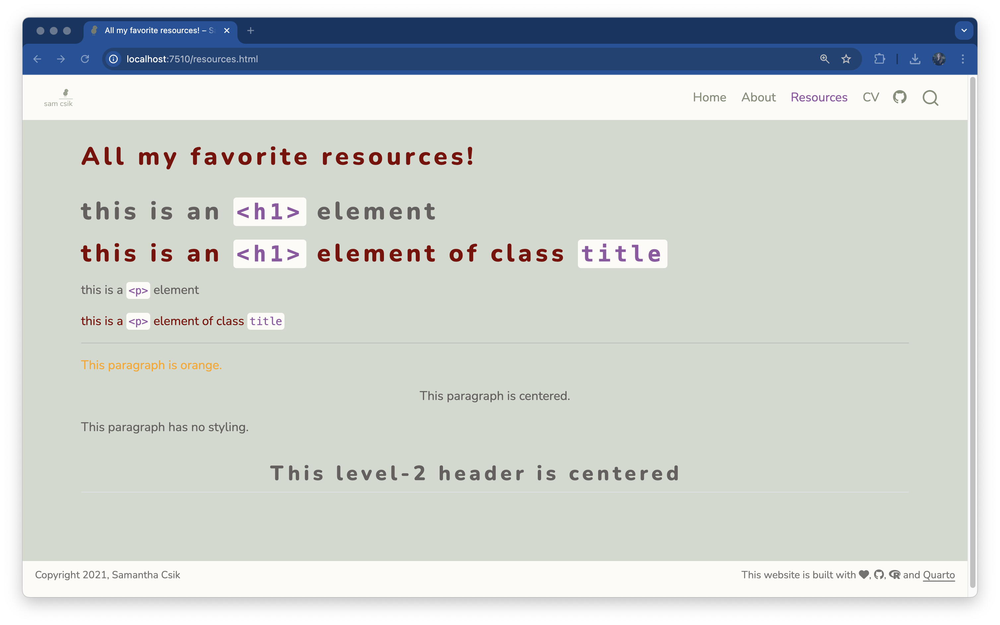
Apply two class selectors
Elements can have more than one class selector
Simply list the names of the class selectors one after the next inside "" – for example, <tag class="class1 class2">Content</tag>.
resources.qmd
#| eval: false#| echo: true#| code-line-numbers: "23-27"---title: "All my favorite resources!"---<h3 class="center-text orange-text">This level-3 header is both centered and orange</h2><p class="orange-text">**This paragraph is orange and bolded using markdown syntax (yes, you can combine markdown and html!).**</p>
2+ classes
(Yeah, okay this doesn’t look that great, but I hope you can at least admire your use of CSS to style different HTML elements!)
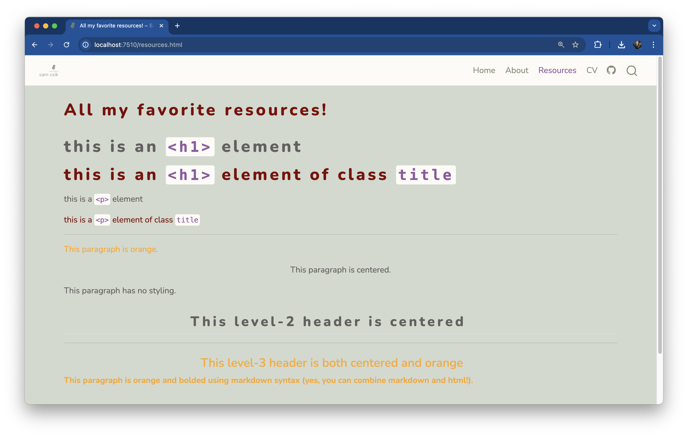
It’s important to note that Quarto (currently) does not create a table of contents (TOC) on a page where header text is specified using HTML syntax (e.g. <h1>, <h2>, etc.). It does add a TOC when header text is specified using markdown syntax (e.g. #, ##, etc.) so long as you have toc: true.
Quarto Syntax
Quarto also provides its own syntax for applying classes to elements
You can create both divs (block-level regions of content) and spans (inline content) using Quarto’s syntax. For example:
Divs
# Quarto syntax::: {.my-selector}Some element (e.g. text) to style:::# HTML syntax<div class="my-selector"> Some element (e.g. text) to style</div>
Spans
# Quarto syntaxSome text with just [this section]{.my-selector} styled# HTML syntax<p>Some text with just <span class="my-selector">this section</span> styled</p>
Mix & match styles
You can mix and match syntaxes in .qmd files
An example:
resources.qmd
---title: "All my favorite resources!"---<p class="orange-text">Here is some orange text.</p><p>And here is some normal text beneath it.</p>[Here is more orange text written using Quarto's syntax]{.orange-text}
Screenshot not included, but feel free to copy this content into your resources.qmd file to check out how it renders!
A couple more styling tips
More than 1 font family
Recall that we:
imported two font families from Google Fonts – Nunito and Sen (though you can import and use as many as you’d like), and
set Nunito as our mainfont in _quarto.yml (which applies Nunito as the default font for all text elements).
To also apply Sen, we can:
create a Sass variable for Sen, then
write a CSS rule(s) to apply Sen to our desired text elements.
font-family value
Look for the code chunk titled, Sen: CSS class for a variable style on the Embed code page. We’ll want to grab the value specified after the font-family property (here, that value is, "Sen", sans-serif;).
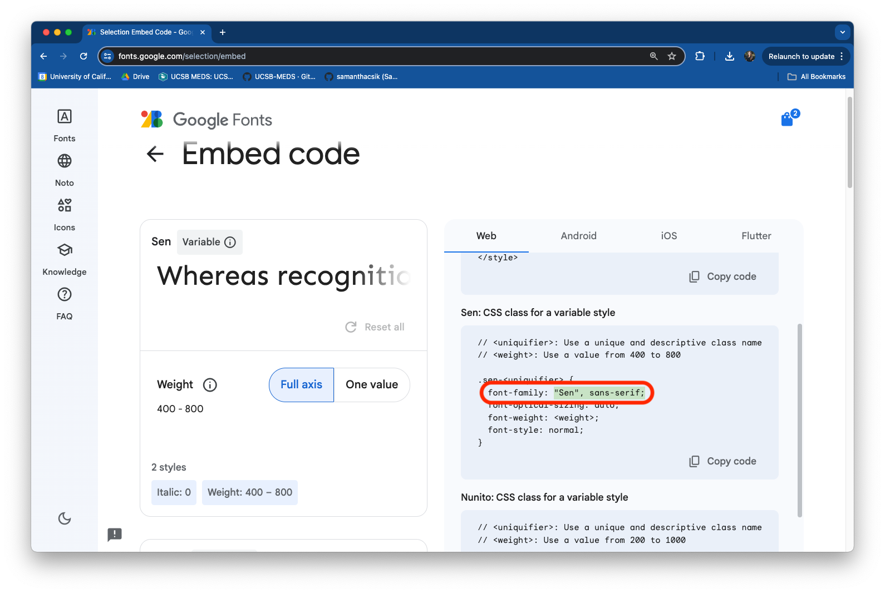
Create Sen Sass / CSS
Here, we create a CSS grouping selector, which applies Sen to any HTML header (<h1> - <h6>):
Let’s add a CSS rule to increase the size of our logo. Be sure to add this rule beneath your /*-- scss:rules --*/ region decorator, and note that you may need to adjust the max-height value to best suit your own personal logo:
Great question! I adapted it from someone else’s open source code, which was available on GitHub. This process often involves some trial and error, but it’s one of the best ways to learn from the many awesome folks who openly share their work.
More specifically, I stumbled upon Robert Mitchell’s personal website (built with Quarto) and noticed that he too had a logo, and that it was perfectly sized to fit the navbar space:
Adapting CSS – trial & error
Here’s what that looked like:
I inspected the logo using Google Chrome’s DevTools (right click > Inspect).
DevTools opened to some HTML which linked to the logo PNG file and had the class navbar-logo (this seemed like a reasonable place to start).
I hopped over to Robert’s custom.scss file and searched for navbar-logo. This didn’t yield any matches.
I returned to the DevTools pane and hovered over the HTML directly above my first attempt (hovering over this new HTML still highlighted the website logo, so I assumed it was targeting the right element). Here, I noticed the class navbar-brand.
I jumped back to the custom.scss file – this time, a search for navbar-brand led me to the CSS rule used to adjust the size of the logo.
(Not shown in gif) Finally, I tried copying this rule over to my own stylesheet to test it out (and hope that it actually works)! I had to tweak the max-height to work for my logo.
A gif of the process is shown on the next slide.
Adapting CSS – trial & error
References
Huge thanks the following people who have generated and shared most of the content of this lecture: